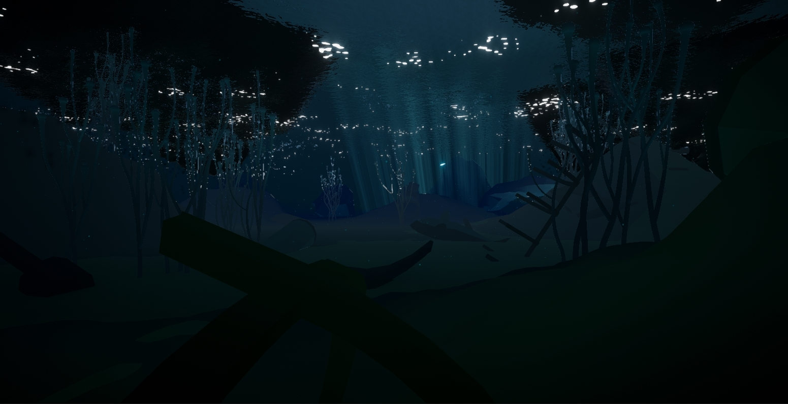
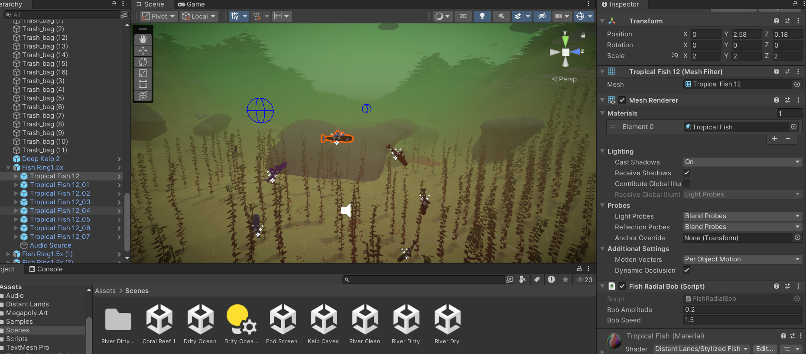
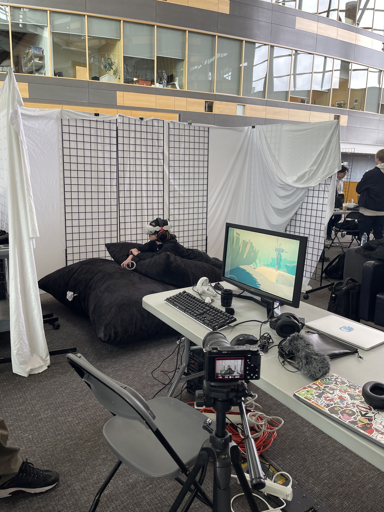

"Become Fish" VR Experience

What one stage the experience looked like
Problem Statement & Objective
Designing an immersive Virtual Reality (VR) experience to demonstrate how human activity can damage the environment.
The objective was to build a real-time interactive environment that places users inside a polluted river, effectively conveying the consequences of ecological damage through experiential design.

Building and optimizing the polluted river environment in the Unity Editor
Architecture & Tech Stack
- Engine & Language: Unity 3D, C#
- Core Concepts: Virtual Reality (VR) Interaction, 3D Environment Optimization, Spatial Audio
- Hardware Target: VR Headset Environments

Live user testing and real-time feedback gathering at the SFU Surrey campus showcase
Implementation Details
- Environment & Gameplay Engineering: Scripted interactive C# mechanics and designed a polluted river environment that successfully conveyed the intended message about human ecological impact.
- Performance Optimization: Optimized the 3D assets to maintain the high rendering framerates strictly required for a comfortable VR experience.
- Live Showcase & User Testing: Concluded the project with an in-person showcase at the SFU Surrey campus, presenting the VR experience to peers, faculty, and visitors. Surveyed and interviewed participants post-session to observe real-time audience reactions, gather immediate feedback, and validate the emotional impact of the environment.
Gameplay & Showcase Video
Because VR experiences are difficult to evaluate without hardware, we recorded a full gameplay demonstration and showcase of the environment in action.